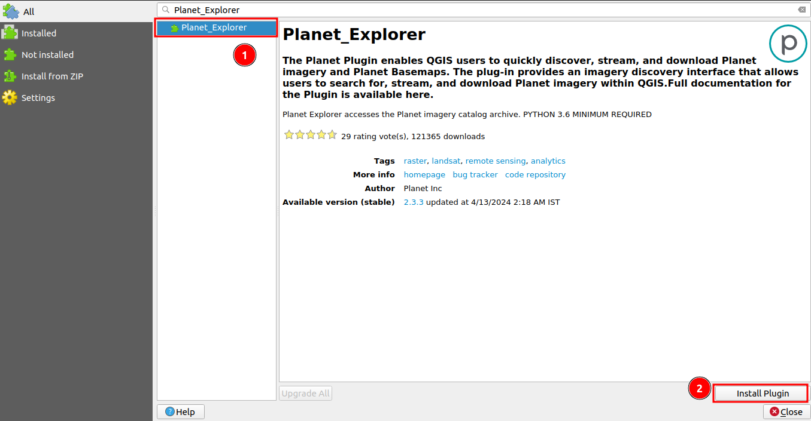

4. Quick Start Documentation¶
The EPAL-Eligible Project Area Locator Tool consists of two main components:
-
A QGIS project that contains all the data for the area of interest, such as Malawi as outlined above.
-
The EPAL-Eligible Project Area Locator Plugin that helps users view current, recent, and historical imagery of an area and easily draw boundaries for proposed reforestation projects.
To use the tool, a few dependencies are required:
- QGIS: The tool runs in QGIS geographical software, which needs to be installed on the user's computer.
- A free account for NICFI data: https://www.planet.com/nicfi
- Planet_explorer: Some data (e.g., NICFI imagery) is streamed in via the Planet plugin, so this plugin needs to be installed in QGIS.
The following Quick Start documentation will guide users on how to set up the tool with its dependencies:
- Get QGIS.
- The project file for an area of interest.
- Sign in for a Planet NICFI account.
- Install the Plantet_Explorer Plugin.
- Install the EPAL-Eligible Project Area Locator Plugin.
4.1 1. How to install QGIS:¶
-
QGIS, short for Quantum Geographic Information System, is a free and open-source software used for working with geospatial data. This data can be easily edited and analysed within QGIS. As a cross-platform application, it is widely used in geographic data applications and runs on different operating systems, including Windows, Mac, and Linux. QGIS is written in Python, C++, and Qt.
-
Step 1: Visit the QGIS Website: Open your web browser and go to the QGIS official website: QGIS Download Page.

-
Step 2: Choose Your Operating System: On the download page, you will see options for different operating systems (Windows, macOS, Linux, etc.). Select the download option that matches your operating system.
Click on the 1️⃣
Download for Windows. To view the versions available for download.- Choose Your Version: On the download page, you will see multiple versions of QGIS. Choose the version that is recommended for your needs. Generally, the Long Term Release (LTR) is recommended for most users as it is the most stable version. Download the LTR.

-
Step 3: Installing QGIS
Once the download is complete, locate the downloaded file in your Downloads folder or the location you specified. Double-click the installer file to start the installation process.
4.2 Follow the Installation Wizard:¶
- The QGIS Setup Wizard will open. Follow the prompts: Click
Nextto start the installation process.

- The second window will include all the licenses that you have to agree with in order to get
QGISinstalled. Check the 1️⃣I accept the terms in the License Agreementbox then click on the 2️⃣Nextbutton.

-
Next, you will be prompted to select the install location. This is the same thing as the installation path and this is where your QGIS version will be installed. It is recommended to go with the default one which is
C:\Program Files\QGIS 3.34for Windows. Please note that the QGIS version number may vary based on the current LTR. -
Select the components you wish to install. For a full installation, leave all options checked and click
Next.
-
Click
Installto begin the installation. -
Complete the Installation: The installer will copy the necessary files to your computer. This process may take a few minutes. Once the installation is complete, click
Finishto exit the Setup Wizard.
4.3 Launch QGIS:¶
You can now launch QGIS from your Start menu or desktop shortcut.
4.4 For MacOS Users¶
If you are using macOS, follow the instructions provided here:
When attempting to launch QGIS for the first time on macOS, there is a chance that macOS will `initially block it due to its origin from the internet. To enable its execution, follow these steps:
- Navigate to
System Preferences. - Select
Security & Privacy. - In the
Generaltab, you will encounter a notification indicating that QGIS is being blocked. Click on theOpen Anywaybutton.
- A confirmation dialog will pop up. Click
Opento commence QGIS.
4.5 2. Accessing Project The project file for an area of interest:¶
- Project Folder Delivery: You need to ask for the project folder from your head office containing all the necessary data for your project.
The QGIS project for the user's area of interest will be shared via a zip folder likely from a link for download from the head office supplier.
Once the project has downloaded onto your computer extract the folder to a destination of your choice.
Open the project folder that contains the following files and folders
1️⃣ The QGIS Project file.
2️⃣ The project geopackage that contains all the supporting vector data.
3️⃣ The masks folder contains the exclusion masks raster data that supports the project.
4️⃣ The images folder that contains the Landsat images that support the project
4.5.1 Opening the EPAL QGIS Project¶
To open the QGIS project right click on the project file that ends in .qgz and choose to open it with QGIS
QGIS will then open with the following project and map layers viewable.
4.5.2 Viewing the Recent NICFI imagery¶
To ensure you are able to see the NICFI imagery already included in the QGIS project make sure you are logged into the Planet Explorer plugin. This allows you to view and analyse the NICFI data alongside your locally stored Landsat images and vector data layers. If not follow the steps below to get the supporting imagery.
- NICFI and Google Imagery: The
NICFIandGoogleimagery are not stored locally but are streamed directly into the project.
4.6 3. Sign up for a Planet NICFI account:¶
Sign up for a Planet NICFI account to stream the NICFI imagery. For detailed documentation on the sign-in for a Planet NICFI account click here
4.7 4. How to install Planet_Explorer Plugin¶
In the open EPAL QGIS project.

- Access the Plugins Menu: Click on the 1️⃣
Pluginsin the Menu Bar at the top of the QGIS window. Upon clicking you will see a dropdown menu.

- Manage and Install Plugins Select the 1️⃣
Manage and Install Plugins..option from the dropdown menu.
- Search for the Plugin: In the Plugin Manager window, click on the 1️⃣ search bar and type Planet_explorer.

- Select and Install: Once you find the Planet_explorer plugin in the search results, select it by clicking on the 1️⃣
Planet_Explorerand then click on the 2️⃣Install Pluginbutton.

After the installation, you will see the login option.
After installing the plugin you will see the option for login to the Planet Explorer site. register to the site and log in to view Norway’s International Climate & Forests Initiative (NICFI), imagery.
Click sign-up to view the detailed documentation on how to sign up on the Planet Explorer site.
Click on login to view the detailed documentation on how to log in on the Planet Explorer site.
4.7.1 Login¶
In the Planet Explorer panel, click on the login button and login to the Planet Explorer. Upon logging in you will see options like upload, draw, select or extent.
4.8 5. How to Install EPAL-Eligible Project Area Locator Tool¶
You need to have the plugin URL. To get the plugin URL, visit to the Plugins GitHub Repository
- Copy the URL into the clipboard
4.8.1 Steps to Install the Plugin¶
-
Open QGIS: Launch the QGIS application on your computer.
-
Access the Plugins Menu: Click on the 1️⃣
Pluginsoption available in the navbar section at the top of the QGIS window. Upon clicking you will see the other option for plugin.
- Manage and Install Plugins Select the 1️⃣
Manage and Install Plugins..option from the dropdown menu.
- Add Plugin URL: Click on the 1️⃣
Settingsoption and then click on the 2️⃣Addbutton to add the plugin URL.
Upon clicking the pop-up will open to add the URL. Enter the 1️⃣ Name and 2️⃣ URL in the respective fields. Click on the 3️⃣ OK button, to add the plugin.
You will see the plugin is added successfully.
- Install Plugin: To install the plugin click on the 1️⃣
Alloption and search for the 2️⃣QGIS EPAL-Eligible Project Area Locator toolplugin. Click on the 3️⃣Pluginname, to enable the install button and then click on the 4️⃣Installbutton, to install the plugin.
After successful installation, you will see the plugin icon.
4.9 Conclusion¶
By following the steps outlined in this Quick Start Guide, you will be able to set up your environment for effective use of plugins, access essential project data, and install necessary plugins such as Planet_Explorer. This setup will enable you to view, analyse, and manage geospatial data, including streamed imagery from NICFI and Google, as well as local data like Landsat images and vector data layers.